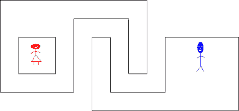

Home Page
F.A.Qs
Statistical Charts
Past Contests
Scheduled Contests
Award Contest
| Online Judge | Problem Set | Authors | Online Contests | User | ||||||
|---|---|---|---|---|---|---|---|---|---|---|
| Web Board Home Page F.A.Qs Statistical Charts | Current Contest Past Contests Scheduled Contests Award Contest | |||||||||
|
Language: Walk
Description Alice would like to visit Bob. However, they live in a hilly landscape, and Alice doesn’t like to walk in hills. She has a map of the area, showing the height curves. You have to calculate the total altitude climbed, and the total altitude descended, for the route which minimizes these numbers. It does not matter how far she has to walk to achieve this. Since you don’t know what the landscape looks like in between the height curves, you cannot know exactly how much climb and descent she will actually get in practice, but you should calculate the minimum possible under optimal conditions based on what you can deduce from the map. The map is represented as an xy grid. Alice lives in (0, 0), and Bob lives in (  Second test case from sample input (compressed). Input On the first line one positive number: the number of testcases, at most 100. After that per testcase:
There will be no more than Output Per testcase:
Sample Input 2 2 20 3 10 10 0 -10 -10 10 25 3 20 20 0 -20 -20 20 3 100 4 -1 1 1 1 1 -1 -1 -1 300 8 -2 2 2 2 2 -2 5 -2 5 1 6 1 6 -3 -2 -3 50 8 3 3 100001 3 100001 -1 7 -1 7 2 4 2 4 -1 3 -1 Sample Output 5 0 200 250 Source |
[Submit] [Go Back] [Status] [Discuss]
All Rights Reserved 2003-2013 Ying Fuchen,Xu Pengcheng,Xie Di
Any problem, Please Contact Administrator